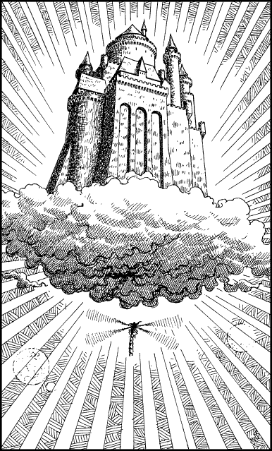

310
The moment you pass through the storm clouds, you enter a stratosphere that is bathed with magnificent light. Above the city’s perpetual cloud layer lies a wondrous vista, an aerial realm that is calm and clear. The golden rays from two suns and the reflected light from twelve satellite moons, combine to bathe the thunderheads with a panoply of colour. You scan these heavens and see high above the dragonfly which is carrying Wolf’s Bane. It is climbing towards a castle-like fortress that seems to rest upon a base of wispy cloud, defying gravity. Your enemy’s flying mount enters the castle from below, passing through a gap in the underside of its cloudy base. Upon seeing his destination you urge your own winged mount to follow in his wake.

You enter the clouds and pass through an open portal, like some massive trapdoor located in the belly of this mystical stronghold. Beyond the portal is a cavern of stone, vaulted and substantial like the dungeons of a great castle. There is no sign of your enemy, save for his mount which is tethered to a wooden pier. You bring your dragonfly in to land upon this pier and then leap down from its back and examine the ground for tracks. You find what you are seeking and they lead you to an archway that opens upon a landing where three tunnels lead off in different directions. However, to your dismay, you discover that Wolf’s Bane has deliberately spoiled his tracks; his footprints lead to all three tunnels.
If you wish to explore the north tunnel, turn to 294.
If you choose to explore the east tunnel, turn to 109.
If you decide instead to explore the west tunnel, turn to 235.